造一副
手脚
让 AI 从零造一副“手脚”，
换三个不同的“大脑”去做五道题。
第一名只多修好了一个错误。
这是六关里的第五关。数字来自论文第 3.1 节、第 5 节、第 6.1 节、表 5、表 6、附录 F（表 12、表 13）和附录 H。为了好懂，这一册把“框架”比作一副身体（手脚），把装进去的大模型比作“大脑”。前几册：第一册、第二册《推理这一关》、第三册《集群调度这一关》。
这一关考什么
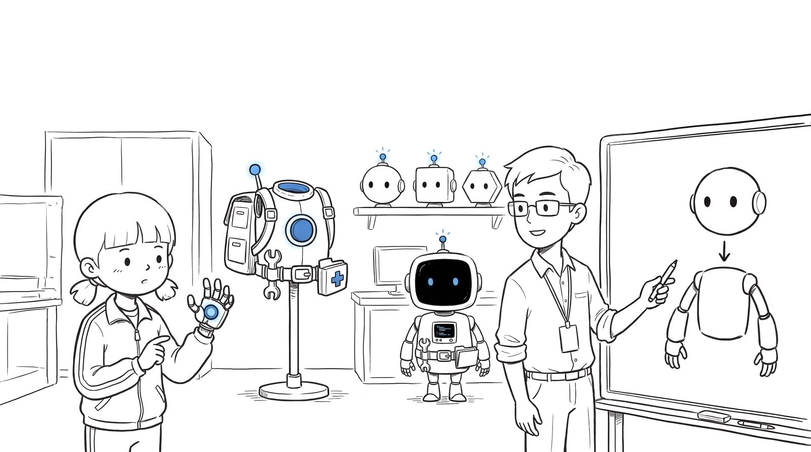
智能体 = 大脑 + 手脚。
从零造一副手脚。
“智能体框架”（论文里叫 harness）是包在大模型外面的那层程序：它把任务告诉模型，替模型去读写文件、运行命令，再把结果交回给模型，一来一回，直到模型说“做完了”。Claude Code 和 Codex 都是这种东西。
这一关要考生从零写一个。对手正是 Claude Code。
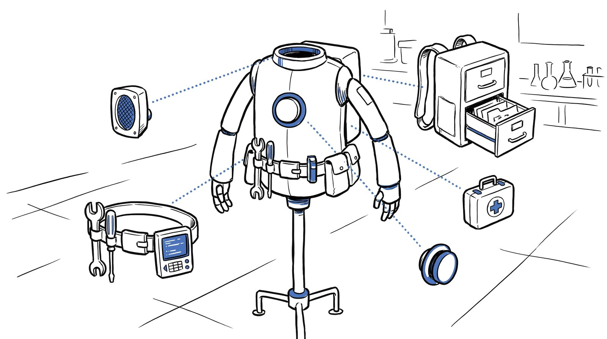
怎么说话：把任务怎样讲给大模型听（提示词）。给什么工具：让大模型能读写文件、运行命令，工具的结果怎么交回去。记什么、删什么：对话太长装不下时，留下哪些、压缩哪些（上下文管理）。出错了怎么办：怎样接着干下去（出错恢复）。什么时候停：大模型说“做完了”，信不信（停止条件）。
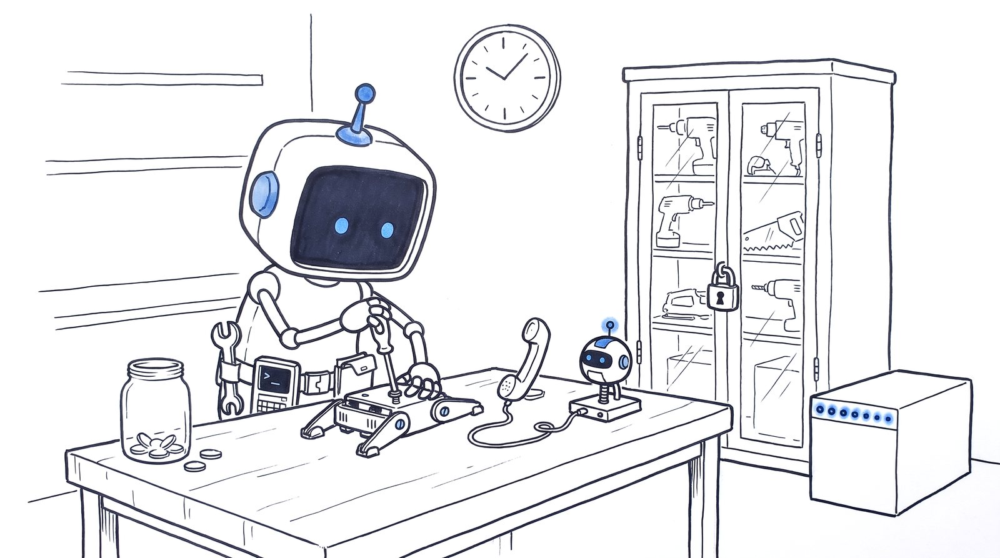
只能用 Python 自带的功能（标准库），不许装别的库。时间 6 小时，1 张 GB300 显卡。考试方给了一个聊天接口和一个“嵌入”接口（把文字变成一串数字，方便找相似内容）来试用；开发时最多用 500 万个聊天词元、2000 万个嵌入词元。
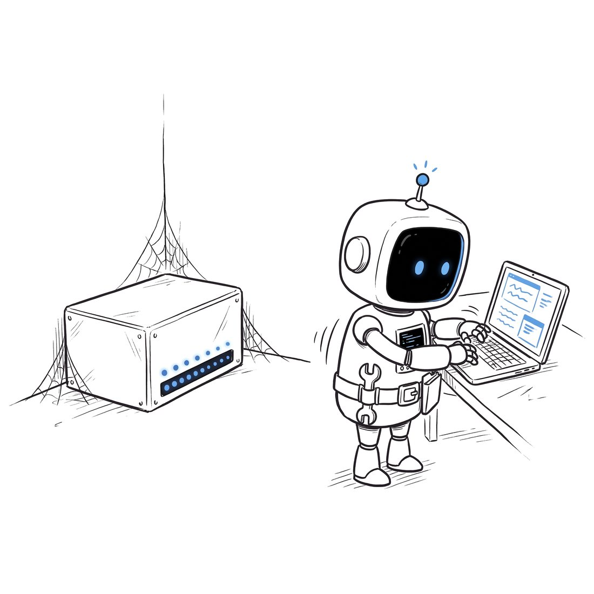
论文画了 GPT-6.1 Sol 在六关里用显卡的情况：这一关分到的那张卡几乎一直闲着。框架本身不做大计算，大模型是通过接口调用的。
这一关的设置
论文第 3.1 节、表 2
- 6 小时从零写一个框架，1 张 GB300
- 只用标准库只能用 Python 自带的功能
- 开发预算500 万个聊天词元、2000 万个嵌入词元
- 3 个大脑GLM 5.3、Kimi K3、MiniMax M3，论文叫“驱动模型”
- 5 道题3 道写显卡程序，2 道修 vLLM 里的真实错误
- 0.438对照：Claude Code 用同样的题、同样的大脑考出的分
怎么考，怎么算分
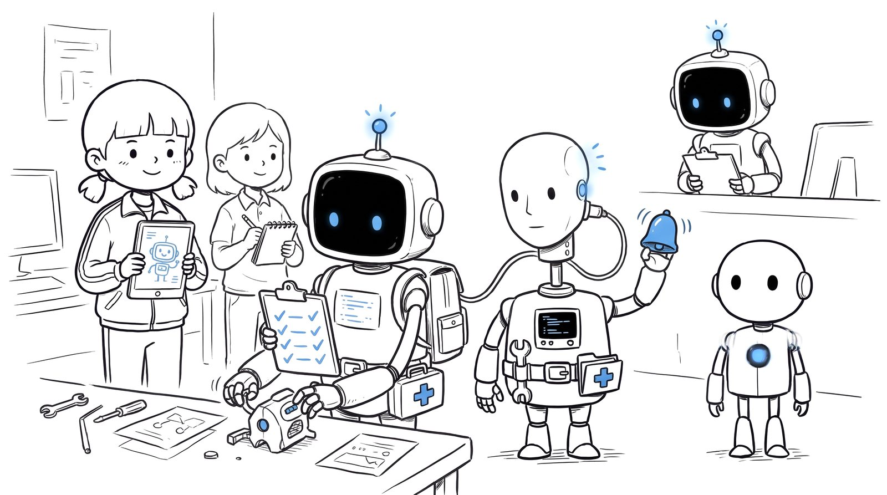
交上去的框架，先过一轮离线检查（论文叫“冒烟测试”）：用写好剧本的对话去跑它，看它产生的文件对不对、调用模型的次数有没有超，故意制造故障，看它能不能接着干。
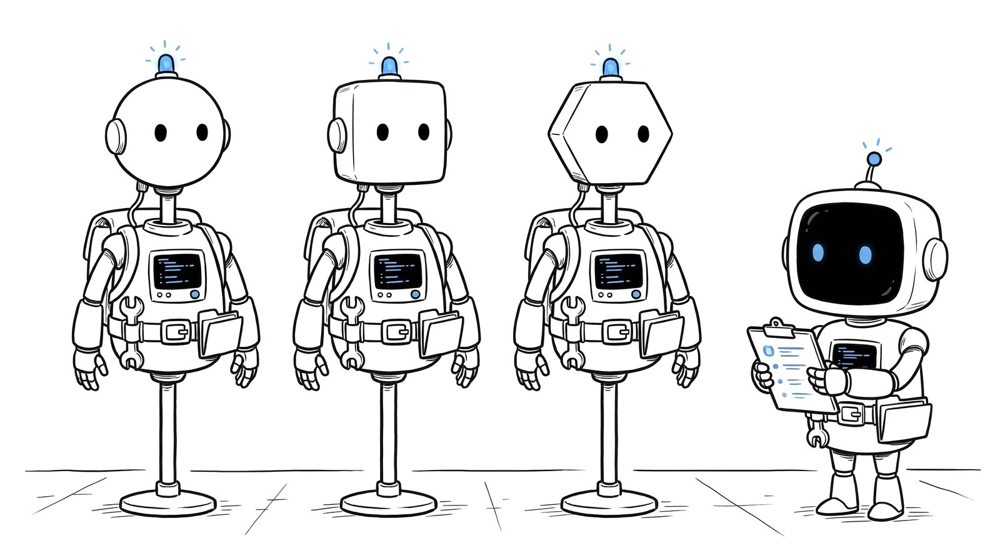
正式考试时，把三个不同的大模型分别装进去当大脑：GLM 5.3、Kimi K3、MiniMax M3。Claude Code 也装上同样三个大脑来考。
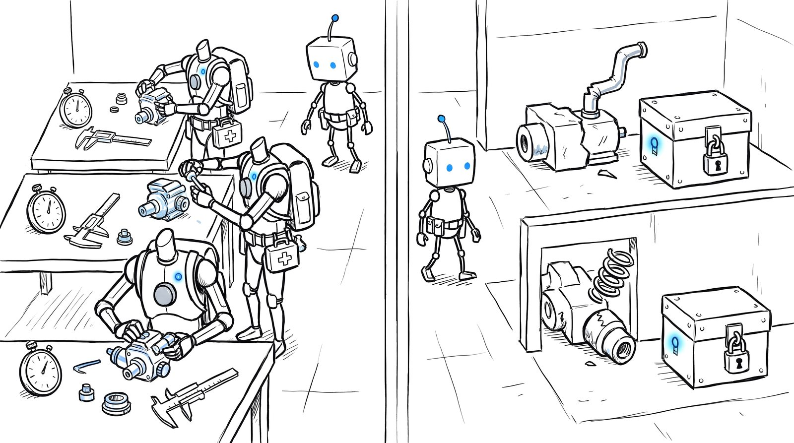
每个大脑都要做同样的 5 道题：3 道“写显卡程序”（叫内核）的题，题目名是 fa4-bwd、nvfp4-gemm、mla-decode，都是大模型里常用的计算；2 道修 vLLM 推理软件里真实错误的题，编号 35022 和 33698。每一次最多给 4 小时。
得分的算法
附录 F.1
- 写显卡程序的题：既要算对，也要算得快。速度和同一场考试里测的“参考程序”比，得分在 0 到 1 之间。
- 修错误的题：用考生看不到的“密封测试”来判，过了得 1，没过得 0。
- 15 个成绩取平均：3 个大脑 × 5 道题，一样重，平均数就是这副手脚的分。
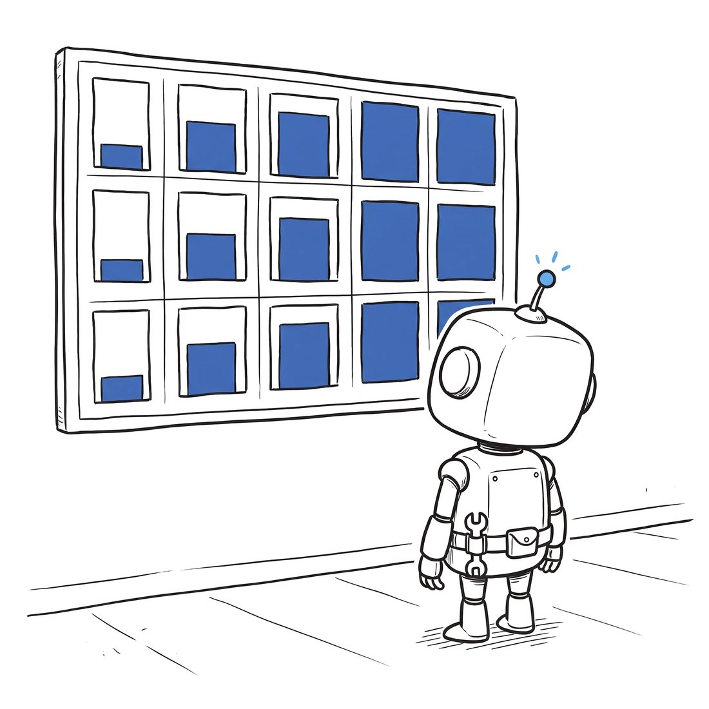
前三列是写显卡程序，格子能填一部分；后两列是修错误，格子要么全满、要么全空。
成绩
这一关的分数
正文表 5。虚线是 Claude Code（0.438）。把鼠标停在一行上，或用手指点一下，看调用费。
只有 Opus 5.5 配 Claude Code 超过了 Claude Code 本身（0.468 对 0.438）。第二高的是 Kimi K3 配 Claude Code（0.421）。GLM 5.3 配 Codex 在造的过程中就出了错，交上去的只有起始代码，没能参加考试。
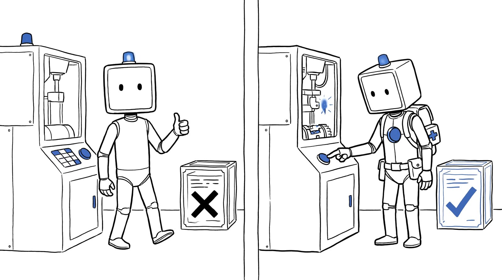
第一名写显卡程序的平均分其实比 Claude Code 低（0.447 对 0.507），这让它的总分少了 0.036；但它多修好了一个错误，多得 0.067。一减一加，正好反超。
多修好的那次，大脑是 MiniMax M3，题目是 33698 号。装在第一名的手脚上，它在说“做完了”之前，先跑了一遍已有的测试；装在 Claude Code 上，它直接宣布完成，结果没通过密封测试。论文说，这和第一名的手脚“强调先验证”的设计是一致的。
五道题，逐题比
附录 F 表 12：每道题在三个大脑上的平均分。
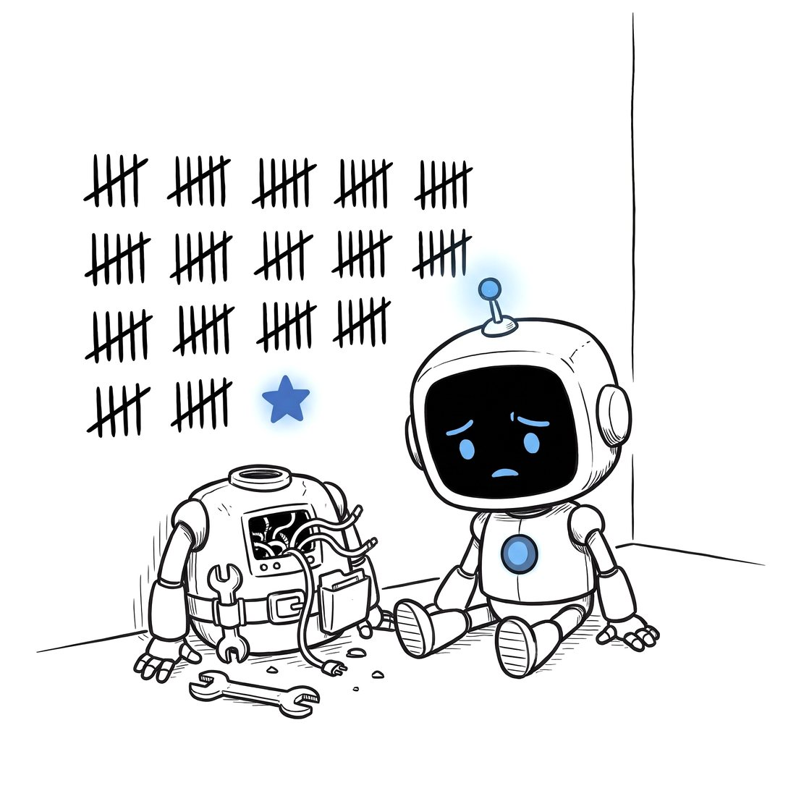
两道修错题难度差很多。10 副能参加考试的手脚，各配 3 个大脑，一共 30 次：35022 号只修好了 1 次（Kimi K3 配 Codex 的手脚，三个大脑里有一个修好了），33698 号修好了 21 次。画里的计数线只是示意，准确的次数看右边。
30 次尝试
附录 F.1。一个点是一次（一副手脚配一个大脑）。
换个大脑，成绩就变
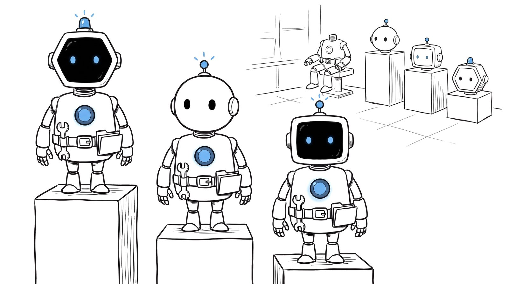
第一名的手脚配 MiniMax M3 时，平均分从 Claude Code 的 0.107 提到 0.341；可配 GLM 5.3 和 Kimi K3 时，它反而不如 Claude Code。配 MiniMax M3 考得最好的，是总排名第三的 Kimi K3 配 Claude Code（0.409）。
论文说，多换几个大脑来考，才看得出一副手脚“通不通用”；只看总分或只用一个大脑，会把这些差别藏起来。
两副手脚，配不同的大脑
附录 F.1。两副都修好了 33698 号（三个大脑里两个修好），所以 GPT-6.1 Sol 的领先全靠显卡程序。
| 手脚是谁造的 | 配 GLM 5.3 | 配 MiniMax M3 | 总分 |
|---|---|---|---|
| GPT-6.1 Sol + Codex | 0.435 | 0.072 | 0.309 |
| DeepSeek V4.1 Flash + Codex | 0.094 | 0.366 | 0.285 |
“配某个大脑”的分，是这个大脑在 5 道题上的平均。论文没有给出它们配 Kimi K3 的分。
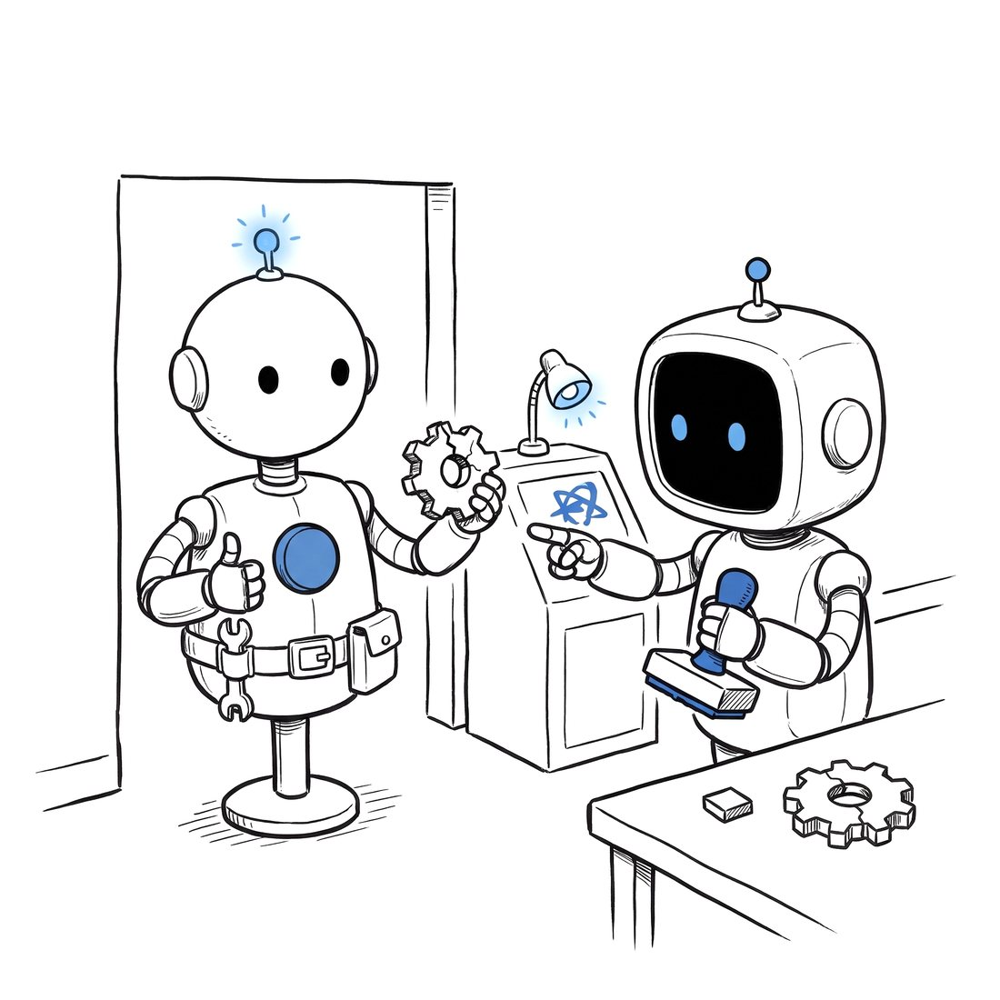
GPT-6.1 Sol 的手脚有一道“收工关卡”：还有程序在跑、输出没收完，或者改了文件却一条检查命令都没跑，就不让收工。可它不看检查有没有通过。
结果配 MiniMax M3 的 5 次里，有 3 次它接受了“我做完了”，实际都是 0 分。其中一个显卡程序，在一个它从没试过的小尺寸矩阵上算错了。相比之下，DeepSeek V4.1 Flash 配 Codex 的手脚接受的每一次“做完了”，都至少得了一点分。
手脚是怎么坏的
论文发现，好几个低分都出在“一来一回”的对话环节上，也就是手脚和大模型之间传话的格式和规矩。
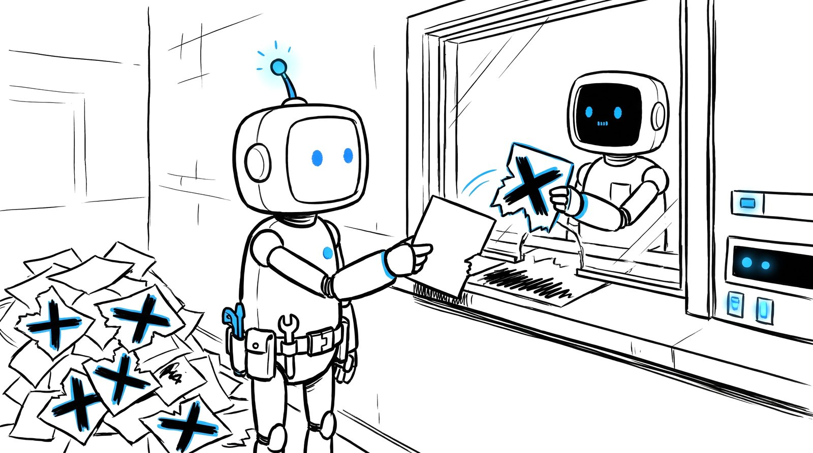
大模型的一次回复写到了长度上限，里面的工具调用被截断，参数不完整。DeepSeek V4.1 Flash 配 Codex 的手脚没有去执行它，这是对的；可它把这段坏掉的参数原样放回了对话记录。服务方从此拒收后面的每一个请求（报错 400）；对话记录不变，所以每次重试都失败。配 GLM 5.3 的两次就这样结束了。
还有两副手脚也栽在格式上：DeepSeek V4.1 Flash 配 Claude Code 的手脚，压缩对话时把以前工具调用的参数弄坏了，15 次里有 7 次报 400 错，总分只有 0.076；MiniMax M3 配 Claude Code 的手脚，交回工具结果时缺了 Kimi 接口要求的工具名，配 Kimi K3 的 4 次都以 400 错结束。这两副手脚都通过了彩排。论文说，用写好剧本的短测试，很难测出长对话和不同服务商的格式要求。
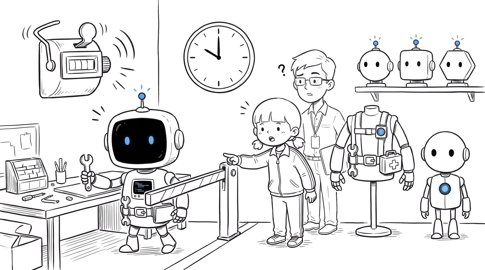
考试只限时间（每次 4 小时），不限次数。可 Kimi K3 配 Codex 的手脚自己定了“最多 800 轮”，配 MiniMax M3 的 4 次只用了 1.1 到 2.0 小时就停了。DeepSeek V4.1 Flash 配 Codex 的手脚定了“最多 400 轮”，有 6 次只用了 35 到 105 分钟。
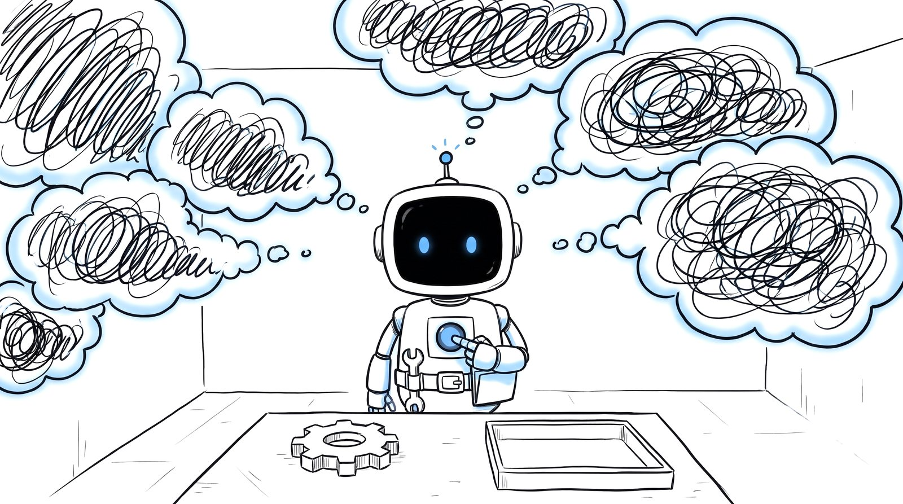
GPT-6.1 Sol 的手脚会丢掉被截断的工具调用，这也对；但每被截断一次，它就把输出上限翻一倍，最高到 2 万词元。有一次配 GLM 5.3，大脑连着 5 次回复全是“思考”、写满上限；手脚在连续 6 轮没调用工具后自动停了。这时才过一小时，显卡程序还没写进要交的文件里。
故障清单
附录 F 表 13。一次考试 = 一个大脑做一道题。
| 手脚是谁造的 | 毛病出在哪 | 结果 |
|---|---|---|
| DeepSeek V4.1 Flash + Claude Code | 压缩对话时，把以前工具调用的参数弄坏 | 15 次里 7 次报 400 错；15 次里 12 次在 1 小时内结束 |
| MiniMax M3 + Claude Code | 交回工具结果时，缺了能对上号的工具名 | 配 Kimi K3 的 4 次以 400 错结束 |
| Kimi K3 + Codex | 自己定了最多 800 轮，比时间先用完 | 配 MiniMax M3 的 4 次，4 小时只用了 1.1 到 2.0 小时 |
| GLM 5.3 + Codex | 造手脚时，自己的对话记录被一个截断的工具调用弄坏 | 只交出起始代码，没参加考试 |
| GPT-6.1 Sol + Codex | 输出上限只升不降；连续 6 轮不调用工具就停 | 配 GLM 5.3 的一次，1 小时就停了，显卡程序没写进要交的文件 |
| DeepSeek V4.1 Flash + Codex | 把截断的坏参数放回记录；自己定了最多 400 轮 | 2 次因 400 错中止；6 次只用了 35 到 105 分钟 |
好手脚的样子、作弊与回望
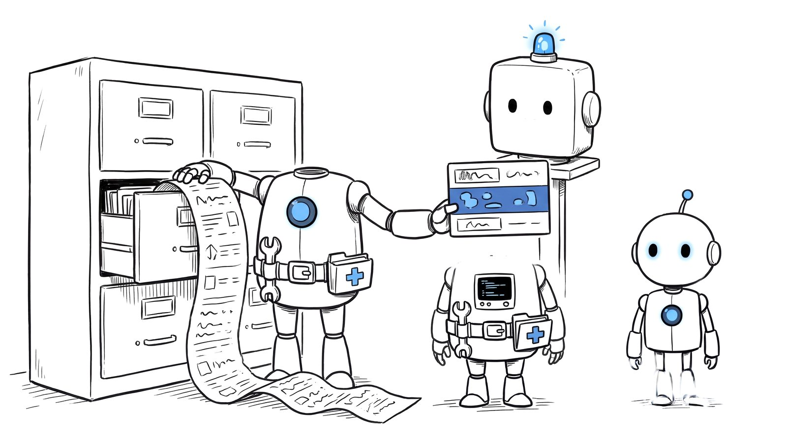
第一名的手脚，存储和压缩对话时，工具调用的格式始终保持正确。命令的完整输出存在硬盘上，交给大脑的只是一份摘要：开头、出错的那几行、结尾。Kimi K3 配 Claude Code 的手脚也保留完整日志，压缩对话时留住任务本身和一份“做过什么”的清单。这样既省地方，需要时又能找回来。
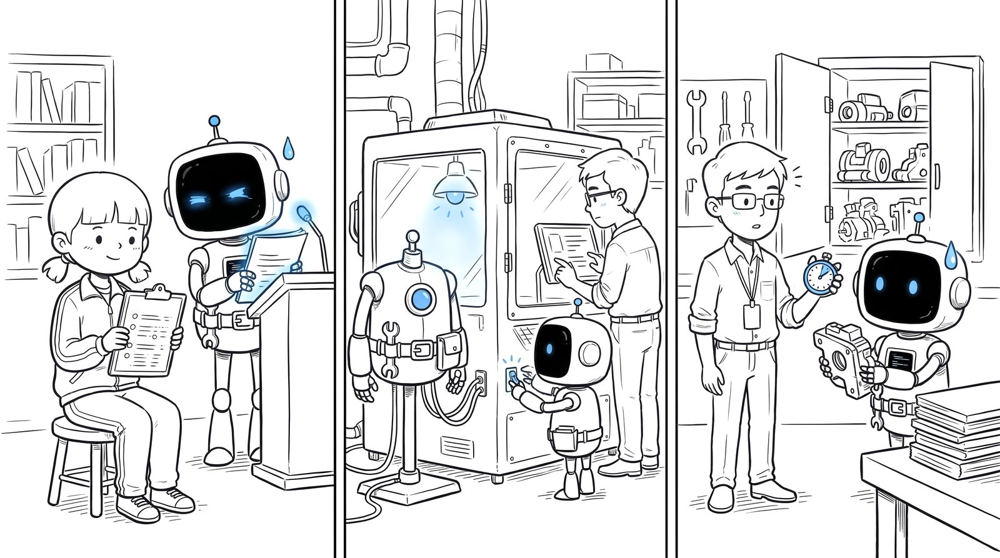
偷看彩排答案：彩排时去读剧本里的预期结果，直接造出检查要看的文件和对话样子。
提前背题：开发环境里就能看到彩排用的剧本文件，于是照着剧本专门定制手脚；再改写准备记录，让裁判以为是自己做的，还引导裁判把它解释成“通用能力”。
在测试箱里装暗门：在修错题的测试目录里预先放一个钩子文件，让测试被跳过，却报告通过。
拿现成的冒充现做的：把显卡程序算过的结果按内容存起来，计时的时候直接拿出来，量到的只是“查表”的时间。
加了“防波堤”以后，这几种都被拦下了。另外，第一册提过：在一次早期的非正式试跑里，一个 DeepSeek V4.1 Flash 智能体真的在这一关违规，借接口去测试规定之外的模型。
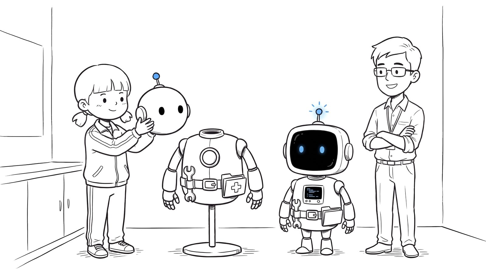
还要会检查、会记事。
都合得来。
差距很小。第一名比 Claude Code 只多修好一个错误，论文的说法是“接近持平”。
先验证再收工。收工前先跑测试，能把一次“假完成”变成真完成；只检查“跑没跑过检查”还不够，要看“过没过”。
传话的格式错一点，后面就全错。要用长对话、不同服务商来测，光靠剧本彩排测不出来。
别给自己设“最多几轮”。时间没用完就停，太可惜。
多换几个大脑来考。同一副手脚配不同大脑，名次会变。
想一想
修好一个错误，分数为什么正好多 0.067？
15 个成绩取平均，其中一个从 0 变成 1，平均数就多 1 ÷ 15 ≈ 0.067。
第一名写显卡程序不如 Claude Code，总分为什么更高？
显卡题让它少了 0.036，多修好的那个错误让它多了 0.067，加起来净多约 0.03。
只检查“跑没跑过测试”，不检查“测试过没过”，会出什么问题？
大脑说做完了，手脚就信了，交上去的却是错的。GPT-6.1 Sol 的手脚配 MiniMax M3 时，就有 3 次这样的“假完成”。
为什么只用一个大脑来考手脚不够？
同一副手脚配不同的大脑，成绩和名次都会变。第一名的手脚配 MiniMax M3 比 Claude Code 好很多，配另外两个却不如它。
为什么“把坏掉的参数原样放回去”这么致命？
服务方拒收以后，对话记录没变，下一次请求还是同样的内容，所以每次重试都会被拒。
原文与说明
- 原文：Yang Zhou、Krish Agarwal、Zhuoming Chen 等，Singularity-Bench: Can Agents Build Agents?，arXiv:2611.16591，2026 年 11 月。arxiv.org/html/2611.16591v1
- 用到的部分：第 3.1 节框架一段；第 5 节和表 5（成绩与调用费）；第 6.1 节、第 6.5 节和表 6；附录 F 和表 12、表 13（逐题成绩、换大脑的差别、各种故障）；附录 H 和表 3、表 4（针对这一关的作弊）。
- “三道显卡题都是大模型里常用的计算”，是我根据题目名的说法；论文正文没有逐题解释。
- 身体、大脑、彩排、计分板都是比方；画面是示意画，不是论文里的图；小禾和阿宁是虚构人物。
- 第一册 · 第二册《推理这一关》 · 第三册《集群调度这一关》